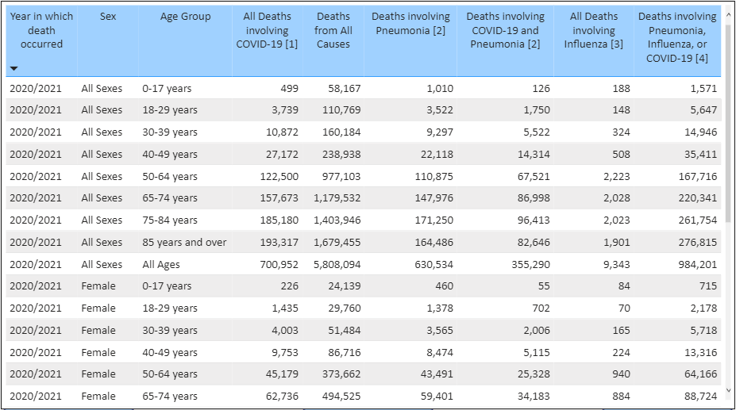

The provisional counts for coronavirus disease 2019 (COVID-19) deaths are based on a current flow of mortality data in the National Vital Statistics System. National provisional counts include deaths occurring within the 50 states and the District of Columbia that have been received and coded as of the date specified. It is important to note that it can take several weeks for death records to be submitted to National Center for Health Statistics (NCHS), processed, coded, and tabulated. Therefore, the data shown on this page may be incomplete, and will likely not include all deaths that occurred during a given time period, especially for the more recent time periods. Death counts for earlier weeks are continually revised and may increase or decrease as new and updated death certificate data are received from the states by NCHS. COVID-19 death counts shown here may differ from other published sources, as data currently are lagged by an average of 1–2 weeks.

Table 1 has counts of deaths involving COVID-19 and other select causes of death by time-period in which the death occurred, sex and age group. For data on deaths involving COVID-19 by month, year, jurisdiction, sex, and age, Socrata icon Click here to download. This data file contains two sets of age groups: (1) age-groups consistent with those used across CDC COVID-19 surveillance pages, and (2) age groups that are routinely included in NCHS mortality reports. When analyzing the file, the user should make sure to select only the desired age groups. Summing across all age categories provided will result in double counting deaths from certain age groups. For data on deaths involving COVID-19 by week, sex, and age (by NCHS age groups), Socrata icon Click here to download. Data on deaths involving COVID-19 among ages 0–18 are available here.